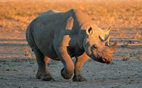

Habitad

A las especies de rinoceronte podemos encontrarlas en África y Asia, aunque dependerá de la especie que necesitemos ubicar. Actualmente existen 5 especies, donde 2 de ellas se encuentran en África y las restantes en Asia.
Caracteristicas
es el segundo mamífero terrestre de mayor tamaño
- pesar más de 3.500 kg.
- Tiene dos cuernos y un morro ancho y recto
- Puede llegar hasta los 6 m
- sus dientes estan adaptados para cortar la hierba
menú